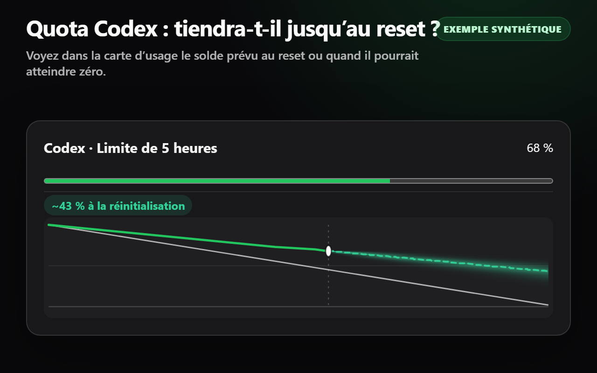
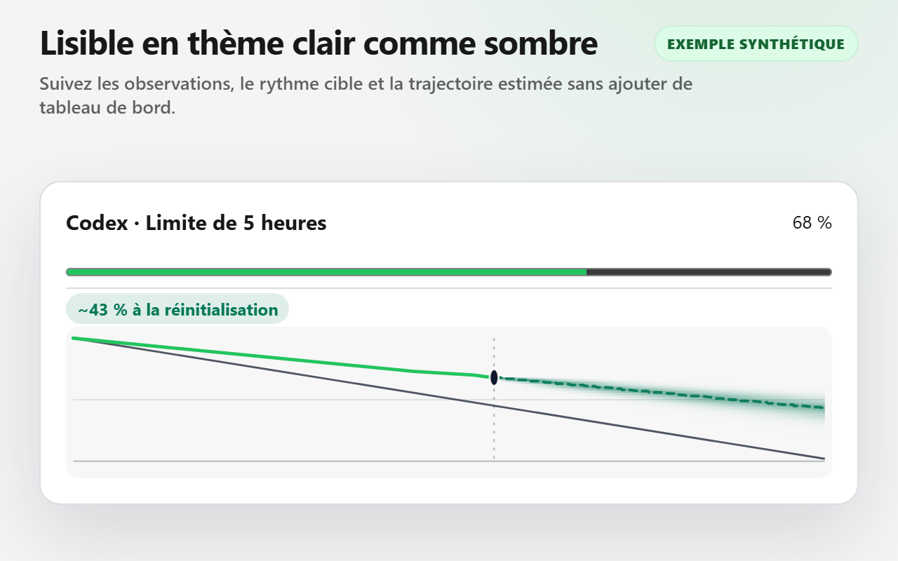
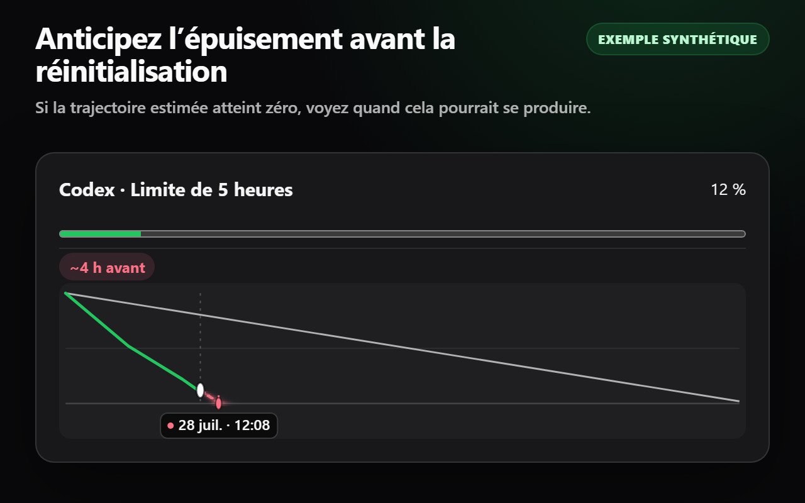
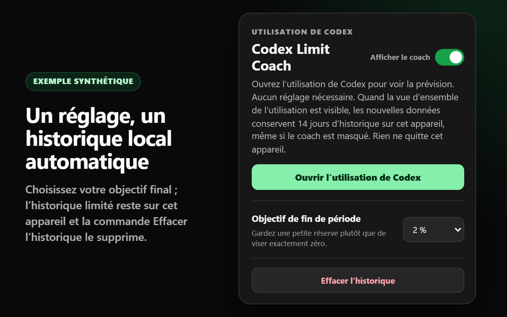

Le résultat d’abord
Chaque compteur affiche indépendamment son solde estimé à la réinitialisation ou le moment où il pourrait atteindre zéro. Aucune carte n’en supplante une autre.
Votre quota Codex tiendra-t-il jusqu’à la réinitialisation ? Codex Limit Coach affiche le solde estimé à la réinitialisation ou le moment où il pourrait atteindre zéro, à côté de chaque carte de quota compatible sur la page d’utilisation de Codex.

1. Installez l’extension et ouvrez sa fenêtre contextuelle. 2. Sélectionnez « Ouvrir l’utilisation de Codex » et connectez-vous si nécessaire. 3. Consultez la prévision à côté des cartes compatibles. Si la page d’utilisation était déjà ouverte lors de l’installation, rechargez la page une fois.
Chaque compteur affiche indépendamment son solde estimé à la réinitialisation ou le moment où il pourrait atteindre zéro. Aucune carte n’en supplante une autre.
L’utilisation observée détermine la prévision. Votre objectif est une référence discrète utilisée seulement pour colorer la trajectoire par rapport à un corridor fixe.
Choisissez un objectif de fin de période. L’historique limité à 14 jours est automatique, reste sur cet appareil et peut être effacé depuis la fenêtre de l’extension.
1. Installez l’extension et ouvrez sa fenêtre contextuelle. 2. Sélectionnez « Ouvrir l’utilisation de Codex » et connectez-vous si nécessaire. 3. Consultez la prévision à côté des cartes compatibles. Si la page d’utilisation était déjà ouverte lors de l’installation, rechargez la page une fois.




Tant que la page d’utilisation de Codex est ouvertee, Codex Limit Coach observe passivement le résultat de quota correctement décodé par la page au moment où celle-ci le lit. Il accède uniquement aux identifiants stables du compteur et de la période, au pourcentage utilisé, à la durée de la période et à l’heure de réinitialisation nécessaires à la prévision. Il génère l’heure d’observation localement et associe les résultats aux cartes natives uniquement à partir de la progression numérique et des métadonnées de réinitialisation, jamais à partir des libellés traduits ou de l’ordre des cartes. Les paramètres et les instantanés automatiques limités restent dans chrome.storage.local.
Il n’effectue aucune requête réseau supplémentaire, ne clone ni ne décode indépendamment la réponse, n’examine ni cookies ni en-têtes d’autorisation, ne transmet aucune donnée de quota et n’accède pas aux champs concernant le compte, l’adresse e-mail, l’offre, les crédits ou le contrôle des dépenses. La seule autorisation de l’extension est storage. Deux déclarations de script de contenu intégrées utilisent deux motifs limités https://chatgpt.com/codex/* et https://chatgpt.com/settings/usage* pour les accès directs et via une SPA ; le traitement des données et le rendu restent sur les vues d’utilisation prises en charge. Il n’existe ni contexte d’arrière-plan, ni backend, ni télémétrie, ni publicité, ni code distant, ni système de compte Codex Limit Coach.
Codex Limit Coach est gratuit sur le Chrome Web Store.